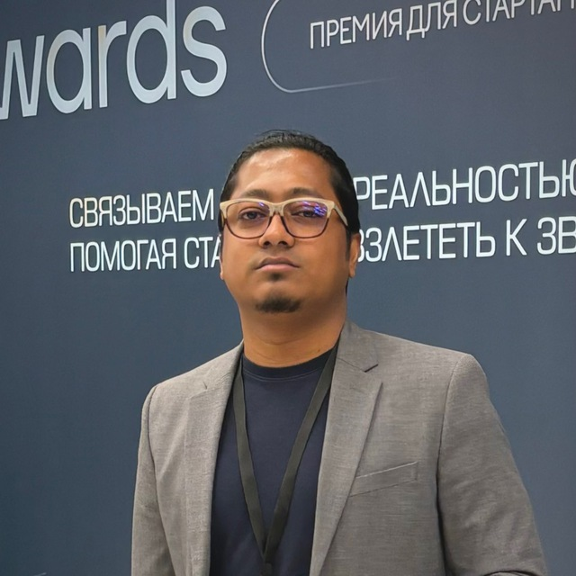

Humaun Kabir

Hi! I am Humaun Kabir, currently a junior programmer NLP at ISS-Soft LLC based in Moscow and an intern at the Natural Language Learning & Generation Group. I have pursued my Master of Science in Neural Networks and Neural Computers from Moscow Institute of Physics and Technology with red diploma.
During my Master's I worked on neural networks, machine learning and deep learning especially focused on natural language processing.
I worked under the supervision of Prof. Alexander Kharlamov at the Centre of Information Technology and Systems CITaS and defended my thesis at the same. In my internship, under the supervision of Prof. Dr. Steffen Eger I am working on NLP for science.
I have stepped into the path of research since mid 2022 and since then been working on natural language processing, large language models and fine-tuning different pretrained models in the field of multimodal natural language processing through job, internship and pet projects. I am keenly interested in text generation, text classification, LLMs in the field of multimodal nlp, nlp for social good and nlp for science.
I have hands-on experience in Python, Golang, MongoDB, PostgreSQL, Docker, Airflow, ETL, PyTorch, Neural Nets, NLTK and Transformers.
Previously, I worked as a backend developer, co-led projects aiming to specific SDGs, brought school kids and girls in university to programming in Bangladesh since 2016. I have been awarded several fellowships in related to youth, technology and development.
Please feel free to check out my general webpage here or reach out to me through email for any Information. Thank you!
Updates
| Nov 2024: | Got accepted into the Young Scientists Congress 2024 at Sochi, Russia. |
| Sep 2024: | Participated in the Eurasia Global 2024 at Orenburg, Russia. |
| Jul 2024: | Got accepted into Athens Natural Language Processing Summer School 2024. |
| Jun 2024: | Joined Natural Language Learning & Generation Group as Intern. |
| Feb 2024: | Participated in World Youth Festival 2024 at Sochi, Russia. |
| Dec 2023: | Spoke to Child Online Protection for Asia and the Pacific Concluding Workshop 2023. |
| Oct 2023: | Participated in Neuroinformatics Conference 2023. |
| Oct 2023: | Joined ISS-Soft as Jr. Programmer NLP. |
| Aug 2023: | Completed my dream trip to Lake Baikal and Transsiberian Railway. |
| Jul 2023: | Pitched to ITU Council 2023 as GCYL. |
| Jul 2023: | Graduated from Moscow Institute of Physics and Technology with Red Diploma. |
| Jun 2023: | Defended my Master's thesis at MIPT. |
| Oct 2022: | Got nominated for ITU Plenipotentiary Conference, Romania. |
| Oct 2022: | Got nominated for ITU Plenipotentiary Conference, Romania. |
| Jun 2022: | Got nominated for the first ever youth summit by ITU GC in Rwanda. |
| Nov 2021: | Started my Master's at Moscow Institute of Physics and Technology, actually started on October 2021. |
| Nov 2021: | Left Bangladesh Open Source Network BdOSN. |
| Aug 2021: | Left Fair Lab. |
| Jun 2021: | Spoke to Girls in Tech Day Bangladesh. |
| Mar 2021: | Started a remote position at Fordham Human Centered AI Research Lab as RA. |
| Mar 2021: | Became one of the 26 youth envoys from all over the world at ITU Generation Connect. |
| Feb 2021: | Became one of the 31 winners at International Open Doors Olympiad. |
| Jan 2021: | Happy New Year. |
Publications
Research Methods for Fake News Detection in Bangla Text
, Kharlamov, A.A., Voronkov, I.M.
International Conference on Neuroinformatics 2023, Moscow
cite
scholar
A Comparative Analysis of Word Embedding Models in Text Classification of Bengali Languagext
, Kharlamov, A.A., Voronkov, I.M.
66th All-Russian Scientific Conference of MIPT
conf
Talks, Media and Fellowships
Speaker - Child Rights in a Digital Era
Child Online Protection for Asia and the Pacific Concluding Workshop 2023
Workshop | Thailand
report (page 38)
web
Speaker - Generation Connect Pitch
International Telecommunication Union Council 2023
Council | Switzerland
web
slides
certificate
Asia and Pacific Youth Envoy
International Telecommunication Plenipotentiary Conference 2022
Fellowship | Romania
web
certificate
Speaker - Meaningful Youth Engagement in ICTD
Girls in Tech Day Bangladesh 2021
Celebration | Bangladesh
web
poster
🏆 Winner
Computer and Data Science Track
International Open Doors Olympiad 2021
Competition | Russia
web
certificate
Bengali language and BengaliAI in EMNLP
[Newspaper, Bangladesh] Dainik Bangla (Print and Online Edition)
Read (bn)
Preparation for high school level national programming competition
[Newspaper, Bangladesh] Prothom Alo and Kishor Alo (Print and Online Edition)
Read in Prothom Alo (bn)
Kishor Alo (bn)
Getting into STEM Olympiad in Bangladesh
[Facebook Live] Panel Discussion with Dr. Mamoon Rashid, CEO, GRECBd
Watch Live (bn)